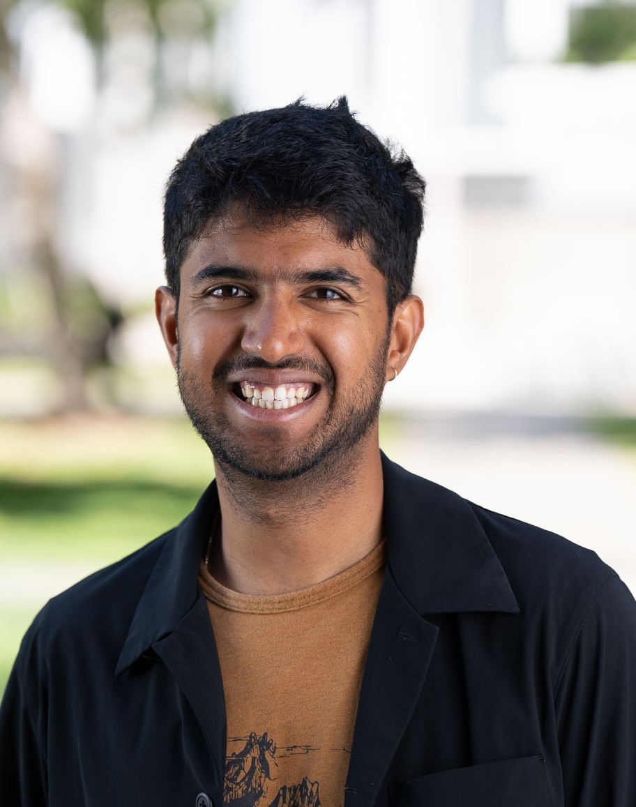

Ph.D. in Computer Science (expected 2027)
University of California, San Diego
M.S. in Computer Science (2021 - 2025)
University of California, San Diego
- 2024. Finalists, NatSec Hackathon (Stanford DEFCON and Shield Capital)
- 2021-2022. Receipent of JN Tata Scholarship.
- Program Committee, Research in Attacks, Intrusions and Defenses (RAID) 2026
- FTC PrivacyCon 2024, Android Security Panel.
- Academic Integrity Review Board (AIRB), UC San Diego (2026-2027)
- GradWIC Board Member, UCSD Graduate Women in Computing (2024).
Some photos I've taken across the US 📸
I am a PhD student at the Department of Computer Science and Engineering at the University of California, San Diego. My advisors are Stefan Savage and Geoff Voelker.
My work centers on empirical analysis of real-world threats, including ransomware attacks on hospitals, large-scale email abuse, automotive security, and broader threats to critical infrastructure. I am also a part of the Sysnet and CryptoSec research groups. My hometown is Bangalore (ಬೆಂಗಳೂರು), India.
Ph.D. in Computer Science
(expected 2027)
University of California, San Diego M.S. in Computer Science
(2021 - 2025)
University of California, San Diego
Recent Publications

Jerry Yu*, Yibo Wei*, Sumanth Rao, Mohak Vaswani, Jefferson Chien, Christian Dameff, Nishant Bhaskar, Aaron Schulman.
To appear at USENIX Security, Baltimore, MD, August 2026
Sumanth Rao, Ye Shu, Stefan Savage, Aaron Schulman, Geoffrey M. Voelker, Enze Liu.
To appear at IEEE Symposium on Security and Privacy (Oakland), San Francisco, May 2026

Jeffrey L. Tully*, Sumanth Rao*, Isabel Straw, Rodney A. Gabriel, Chris Longhurst, Stefan Savage, Geoffrey M. Voelker, Christian J. Dameff.
JAMA Network Open, July 2025

Sumanth Rao, Enze Liu, Grant Ho, Geoffrey M. Voelker, Stefan Savage.
ACM Web Conference (WWW), Singapore, May 2024
(* denotes equal contribution)
Industry Experience
Software Engineering Intern (Jun 2022 - Sep 2022)
Virtual Cluster, Google Cloud Platforms. Improved user experience when spawning new Borg clusters.
Software Engineer (Aug 2020 - Aug 2021)
Citrix Licensing team. Designed a Docker-based automation framework deployed via a hybrid cloud model.
↓